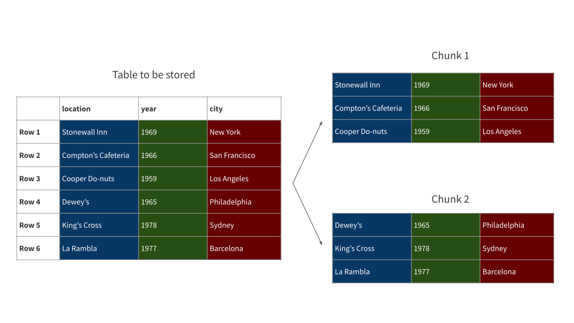
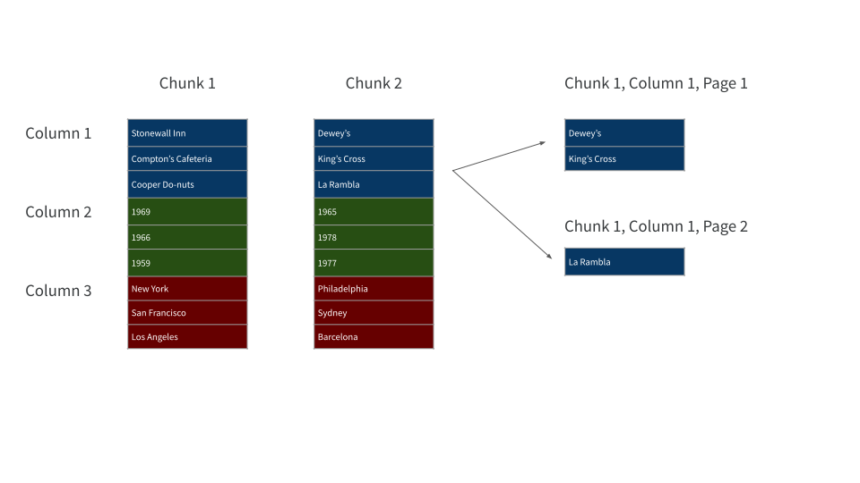

Part 3: Data Storage
In this session we’ll talk about reading and writing large data sets. There are a few interrelated topics that arise here, so it’s really helpful to understand that – in terms of the read/write capabilities of the arrow package – we’re focusing almost entirely on the highlighted path in the diagram below:

Why this specific pathway?
- Arrow Datasets are the only data object suitable for larger-than-memory data. Arrow Tables and R data frames both attempt to represent the entire data set in-memory, which simply won’t work here
- Apache Parquet is a modern data format optimized to make life easier when you’re working with big data (as opposed to CSV and Feather, which both have their uses but aren’t ideal for this situation)
- Local storage because it’s easier. Let’s not complicate the story by talking about S3 buckets!
Parquet files
If you work with large data sets already, you may have encountered parquet files before and none of this will be new material for you. But for folks new to this world it’s not as well known, so we’ll talk a little about the Apache Parquet project. Although they are both associated with the Apache Software Foundation, and the arrow package is (as far as we know!) the easiest way to work with parquet files, Apache Parquet is an entirely different project to Apache Arrow.
Parquet files structure a tabular data set in a format that is “row-chunked, column-arranged, and paged”. Here’s what we mean by that. First, we take a table and partition it row-wise into a set of distinct “chunks”, as shown below:

Then, for every chunk and for every column in each chunk, that column is split into a collection of “pages”:

When the table is written to disk, we start writing from chunk 1, column 1, writing each page in order. We then repeat this for every column in this chunk; and then move to the next chunk. This continues until every page has been written:

Importantly for our purposes each chunk, column, and page is preceded by relevant metadata. In addition, a metadata block is written at the end of the file containing information about the table, and the locations of the various constituent parts.
There are two key features to this format that make it desirable when working with large data sets:
- Parquet file readers can use metadata to scan the file intelligently: if we know in advance that only some subset of the table is needed for a query, the reader can skip to the relevant pages
- Data are stored in a compressed binary format, which reduces file size relative to an uncompressed text format such as CSV.
That being said, you probably won’t be surprised to hear that we’re glossing over a lot of details here. You wouldn’t be able to code a parquet reader on the basis of this simplified description! However, that’s not our goal here: the purpose of this description is to give you enough of a sense of how a parquet file is organized, so you can understand why they’re handy when working with large data! You can find a lot more information about these details in the Apache Parquet documentation.
A single parquet file generally contains a quantity of data small enough to load into memory. For example, let’s say I want to load the NYC taxi data for September 2019. This subset of the data can be stored in a 122MB parquet file, and I can load the whole thing into R as a conventional data frame. It’s about 6.5 million rows, but that’s not too much of a challenge:
parquet_file <- "~/Datasets/nyc-taxi/year=2019/month=9/part-0.parquet"
nyc_taxi_2019_09 <- read_parquet(parquet_file)
nyc_taxi_2019_09# A tibble: 6,567,396 × 22
vendor_name pickup_datetime dropoff_datetime passenger_count
<chr> <dttm> <dttm> <int>
1 VTS 2019-09-01 15:14:09 2019-09-01 15:31:52 2
2 VTS 2019-09-01 15:36:17 2019-09-01 16:12:44 1
3 VTS 2019-09-01 15:29:19 2019-09-01 15:54:13 1
4 CMT 2019-09-01 15:33:09 2019-09-01 15:52:14 2
5 VTS 2019-09-01 15:57:43 2019-09-01 16:26:21 1
6 CMT 2019-09-01 15:59:16 2019-09-01 16:28:12 1
7 CMT 2019-09-01 15:20:06 2019-09-01 15:52:19 1
8 CMT 2019-09-01 15:27:54 2019-09-01 15:32:56 0
9 CMT 2019-09-01 15:35:08 2019-09-01 15:55:51 0
10 CMT 2019-09-01 15:19:37 2019-09-01 15:30:52 1
# … with 6,567,386 more rows, and 18 more variables: trip_distance <dbl>,
# pickup_longitude <dbl>, pickup_latitude <dbl>, rate_code <chr>,
# store_and_fwd <chr>, dropoff_longitude <dbl>, dropoff_latitude <dbl>,
# payment_type <chr>, fare_amount <dbl>, extra <dbl>, mta_tax <dbl>,
# tip_amount <dbl>, tolls_amount <dbl>, total_amount <dbl>,
# improvement_surcharge <dbl>, congestion_surcharge <dbl>,
# pickup_location_id <int>, dropoff_location_id <int>One thing to highlight here is that the columnar structure to parquet files makes it possible to load only a subset of the columns:
parquet_file |>
read_parquet(col_select = matches("pickup"))# A tibble: 6,567,396 × 4
pickup_datetime pickup_longitude pickup_latitude pickup_location_id
<dttm> <dbl> <dbl> <int>
1 2019-09-01 15:14:09 NA NA 186
2 2019-09-01 15:36:17 NA NA 138
3 2019-09-01 15:29:19 NA NA 132
4 2019-09-01 15:33:09 NA NA 79
5 2019-09-01 15:57:43 NA NA 132
6 2019-09-01 15:59:16 NA NA 132
7 2019-09-01 15:20:06 NA NA 132
8 2019-09-01 15:27:54 NA NA 224
9 2019-09-01 15:35:08 NA NA 79
10 2019-09-01 15:19:37 NA NA 97
# … with 6,567,386 more rowsBetter yet, the file reader is faster when only a subset of the columns is needed
tic()
parquet_file |>
read_parquet() |>
invisible() # suppress printing
toc()0.867 sec elapsedtic()
parquet_file |>
read_parquet(col_select = matches("pickup")) |>
invisible()
toc()0.165 sec elapsedThis property is handy when dealing with larger-than-memory data: because we can’t load the whole thing into memory, we’re going to have to iteratively read small pieces of the data set. In the next section we’ll talk about how large data sets are typically distributed over many parquet files, but the key thing right now is that whenever we’re loading one of those pieces from a parquet file, an intelligently designed reader will be able to speed things up by reading only the relevant subset each parquet file.
Let’s start with some baseline data. Take the data currently stored in
nyc_taxi_2019_09and write it to a CSV file usingwrite_csv_arrow()function supplied by the arrow package. Using thetic()andtoc()functions from tictoc package, record how long it took to write the file. Similarly, using thefile_size()function from the fs package, see how large the file is.Repeat the previous exercise, but this time write the data to a parquet file using
write_parquet(). For folks who are new to parquet files: use.parquetas the file extension. How does this compare to the previous exercise?Try reading both files into R using
read_csv_arrow()andread_parquet(), and compare load times. As a bonus, try the same thing withas_data_frame = FALSEfor both files: that way the data will be read into Arrow memory rather than R memory. Is there a difference in elapsed time?
tic()
write_csv_arrow(nyc_taxi_2019_09, "data/nyc_taxi_2019_09.csv")
toc()25.553 sec elapsedfile_size("data/nyc_taxi_2019_09.csv")940Mtic()
write_parquet(nyc_taxi_2019_09, "data/nyc_taxi_2019_09.parquet")
toc()2.561 sec elapsedfile_size("data/nyc_taxi_2019_09.parquet")125MWriting data from R to a parquet file is faster than writing a CSV file. The end result is much smaller too. The difference in file size is mostly because parquet files are a binary compressed format, whereas CSV files are stored as uncompressed plaintext.
Recall that in exercises 1 and 2 I saved the data to "data/nyc_taxi_2019_09.csv" and "data/nyc_taxi_2019_09.parquet". You may have chosen different file paths!
The first part of the problem asks us to read the CSV file and the parquet file into R, and record the time taken:
tic()
"data/nyc_taxi_2019_09.csv" |>
read_csv_arrow() |>
invisible()
toc()1.603 sec elapsedtic()
"data/nyc_taxi_2019_09.parquet" |>
read_parquet() |>
invisible()
toc()0.539 sec elapsedThe parquet file is substantially faster to read.
The second part of the problem asks us to repeat the exercise, loading the data as an Arrow Table rather than an R data frame. Here’s how we do that:
tic()
"data/nyc_taxi_2019_09.csv" |>
read_csv_arrow(as_data_frame = FALSE) |>
invisible()
toc()1.298 sec elapsedtic()
"data/nyc_taxi_2019_09.parquet" |>
read_parquet(as_data_frame = FALSE) |>
invisible()
toc()0.557 sec elapsedRead times are fairly similar for Arrow as they are for R. Again, the parquet file is faster than the CSV file.
Multi-file data sets
In our hands-on exercises we’ve been working with the NYC Taxi data, a single tabular data set that is split across 158 distinct parquet files. It’s time to take a closer look at how this works. Let’s start by opening the data:
nyc_taxi <- open_dataset("~/Datasets/nyc-taxi/")
nyc_taxiFileSystemDataset with 158 Parquet files
vendor_name: string
pickup_datetime: timestamp[ms]
dropoff_datetime: timestamp[ms]
passenger_count: int64
...The ... in the output indicates truncation: I’m only showing the first few lines of output because it’s the first line that’s important. The nyc_taxi object is an Arrow Dataset represented by 158 files. We can inspect the files field of this object to find the paths to these files:
nyc_taxi$files [1] "/home/danielle/Datasets/nyc-taxi/year=2009/month=1/part-0.parquet"
[2] "/home/danielle/Datasets/nyc-taxi/year=2009/month=10/part-0.parquet"
[3] "/home/danielle/Datasets/nyc-taxi/year=2009/month=11/part-0.parquet"
[4] "/home/danielle/Datasets/nyc-taxi/year=2009/month=12/part-0.parquet"
[5] "/home/danielle/Datasets/nyc-taxi/year=2009/month=2/part-0.parquet"
...Notice that the filenames are structured. They’re organised by year and month and – as you might expect – the data for September 2016 can be found in the year=2016/month=9/ folder. Not only that, the folder names correspond to actual field-value pairings in the data. The nyc_taxi data set has variables named year and month, and those variables can take values 2016 and 9 respectively. This convention, in which folders are named using the relevant filed-value pairs, is referred to as “Hive partitioning”, based on the Apache Hive project.
Partitioning the data set in a thoughtful way is one of those tricks used to make large data sets manageable. If I want to compute some quantity based only on the rides that took place in September 2019, I can ask the operating system to open the one file containing that data. My query never has to touch the other 157 files. To give a sense of how much of a difference this makes, let’s compare two different queries. The first one extracts a subset of about 10 million rows, based on the partitioning variables:
nyc_taxi |>
filter(year == 2016, month == 9) |>
nrow()[1] 10116018The second one extracts a subset of about the same size, again about 10 million rows, based on the pickup location zone:
nyc_taxi |>
filter(pickup_location_id == 138) |>
nrow()[1] 10823589Neither of these queries do very much with the data: they’re just inspecting the metadata to count the number of rows. However, the first query only needs to look at the metadata in one file, whereas the second one has to extract and aggregate data from all 158 files. The difference in compute time is striking:
tic()
nyc_taxi |>
filter(year == 2016, month == 9) |>
nrow() |>
invisible()
toc()0.026 sec elapsedtic()
nyc_taxi |>
filter(pickup_location_id == 138) |>
nrow() |>
invisible()
toc()4.203 sec elapsedAdmittedly, this is a bit of a contrived example, but the core point is still important: partitioning the data set on variables that you’re most likely to query on tends to speed things up.
This leads to a natural question: how many variables should we partition on? The nyc_taxi data set is partitioned on year and month, but there’s nothing stopping us from defining a weekday variable that takes on values of Sunday, Monday, etc, and using that to define a third level of partitioning. Or we could have chosen to drop month entirely and partition only on year. Which approach is best?
The answer, boringly, is that it depends. As a general rule, if you break the data up into too many small data sets, the operating system has to do too much work searching for the files you want; too few, and you end up with some very large and unwieldy files that are hard to move around and search. So there’s often a sweet spot where you partition based on small number of variables (usually those that are used most often in queries) and end up with a manageable number of files of a manageable size. These rough guidelines can help avoid some known worst cases:
- Avoid files smaller than 20MB and larger than 2GB.
- Avoid partitioning layouts with more than 10,000 distinct partitions.
As an aside, you can apply the same guidelines when thinking about how to structure groups within file types such as parquet that have a notion of row chunks etc, because the same tradeoffs exist there.
An example
Okay, enough theory. Let’s actually do this. We’ve already seen the “read” functionality in action, but I’m going to do it again with some additional arguments specified. This time around, I’m going to open a smaller subset, corresponding only to the 2016 data:
nyc_taxi_2016a <- open_dataset(
sources = "~/Datasets/nyc-taxi/year=2016/",
format = "parquet",
unify_schemas = TRUE
)In this version of the command I’ve explicitly stated that I’m looking for parquet files, though I didn’t really need to do this because format = "parquet" is the default. I’ve also set unify_schemas to TRUE rather than the default value of FALSE. What this argument refers to is the way open_dataset() aggregates the data files. When unify_schemas = TRUE, it examines every data file to find names and data types for each column (i.e., the schema for the data set), and then seeks to aggregate those into a coherent whole. This can be time consuming, and is usually unnecessary because the data are written in the exact same format in every file. As a consequence, when unify_schemas = FALSE (the default), the scanner will just look at the first file and assume that every data file has the same schema.
Okay, so let’s have a look at the data:
nyc_taxi_2016aFileSystemDataset with 12 Parquet files
vendor_name: string
pickup_datetime: timestamp[ms]
dropoff_datetime: timestamp[ms]
passenger_count: int64
...As expected, this is a multi-file Dataset object constructed from 12 files.
Next, let’s imagine that we’re about to write an application whose primary function is to look at the different vendors who provide the raw data on a monthly basis. That’s a highly specialized use of this data set, and it may be advantageous to partition by month and vendor_name because those are the variables we’re likely to be querying on later. Because the philosophy of the arrow package is to try to preserve dplyr logic to the greatest possible extent, the default behaviour of write_dataset() is to inspect the grouping variables for the data and use those to construct a Hive-style partition. So if I want to write this Dataset to file using month and vendor as my partitioning variables I would do this:
tic()
nyc_taxi_2016a |>
group_by(month, vendor_name) |>
write_dataset("~/Datasets/nyc-taxi_2016")
toc()39.782 sec elapsedAs you can see, this write operation does take a little while to finish, but half a minute isn’t too bad.
In any case, I can open the new data set the same way as before:
nyc_taxi_2016b <- open_dataset("~/Datasets/nyc-taxi_2016")
nyc_taxi_2016bFileSystemDataset with 27 Parquet files
pickup_datetime: timestamp[ms]
dropoff_datetime: timestamp[ms]
passenger_count: int64
trip_distance: double
...Notice the difference between nyc_taxi_2016a and nyc_taxi_2016b. The both refer to the same data conceptually (i.e., all the taxi rides from 2016), but they’re linked to different files and they carve up the dataset in different ways:
nyc_taxi_2016a$files [1] "/home/danielle/Datasets/nyc-taxi/year=2016/month=1/part-0.parquet"
[2] "/home/danielle/Datasets/nyc-taxi/year=2016/month=10/part-0.parquet"
[3] "/home/danielle/Datasets/nyc-taxi/year=2016/month=11/part-0.parquet"
[4] "/home/danielle/Datasets/nyc-taxi/year=2016/month=12/part-0.parquet"
[5] "/home/danielle/Datasets/nyc-taxi/year=2016/month=2/part-0.parquet"
...nyc_taxi_2016b$files [1] "/home/danielle/Datasets/nyc-taxi_2016/month=1/vendor_name=CMT/part-0.parquet"
[2] "/home/danielle/Datasets/nyc-taxi_2016/month=1/vendor_name=VTS/part-0.parquet"
[3] "/home/danielle/Datasets/nyc-taxi_2016/month=10/vendor_name=CMT/part-0.parquet"
[4] "/home/danielle/Datasets/nyc-taxi_2016/month=10/vendor_name=VTS/part-0.parquet"
[5] "/home/danielle/Datasets/nyc-taxi_2016/month=11/vendor_name=CMT/part-0.parquet"
...To give you a sense of the difference between the two, here’s an example of a (somewhat) realistic query, computed on the nyc_taxi_2016b data:
nyc_taxi_2016b |>
filter(vendor_name == "CMT") |>
group_by(month) |>
summarize(distance = sum(trip_distance, na.rm = TRUE)) |>
collect()# A tibble: 12 × 2
month distance
<int> <dbl>
1 1 33436823.
2 11 13826243.
3 12 13642500.
4 10 41799496.
5 4 27440575.
6 2 40006137.
7 3 55384892.
8 5 52798627.
9 6 15617981.
10 9 76139235.
11 8 22581320.
12 7 19210103.Here’s the time taken for this query:
0.803 sec elapsedand for the same query performed on the nyc_taxi_2016a data:
2.811 sec elapsedThe difference is not quite as extreme as the contrived example earlier, but it’s still quite substantial: using your domain expertise to choose relevant variables to partition on can make a real difference in how your queries perform!
(Preliminary) Write a query that picks out the 2019 NYC Taxi data and – in addition to the
monthandyearcolumns already existing in the data – adds columns formonthdayandyeardayspecifying the day of the month and the day of the year on which the pickup took place (note: lubridate functionsday()andyday()are both supported). Check that your query works by selecting thepickup_datetimecolumn and your newly-createdmonthdayandyeardaycolumns and then collecting the first few rows.Using this query, write the 2019 NYC Taxi data to a multi-file dataset – twice. The first time you do it, partition by
monthandmonthday. The second time you do it, partition byyearday. Notice that both of these produce 365 files, each of which contain the exact same subset of data!Using only the datasets that you have just written to disk (i.e., you’ll have to reopen them using
open_dataset()), calculate the total amount of money charged (as measured by thetotal_amountvariable) each day, for the 81st through 90th day of the year (using theyeardayvariable). Do this for both versions of the dataset that you just created, and record how long it took to finish in both cases. What do you notice?
The query:
nyc_taxi_2019_days <- nyc_taxi |>
filter(year == 2019) |>
mutate(
monthday = day(pickup_datetime),
yearday = yday(pickup_datetime)
)The check:
nyc_taxi_2019_days |>
select(pickup_datetime, monthday, yearday) |>
head() |>
collect()# A tibble: 6 × 3
pickup_datetime monthday yearday
<dttm> <int> <int>
1 2019-12-01 12:39:20 1 335
2 2019-12-01 12:07:55 1 335
3 2019-12-01 12:22:44 1 335
4 2019-12-01 12:38:48 1 335
5 2019-12-01 12:13:21 1 335
6 2019-12-01 12:39:52 1 335tic()
nyc_taxi_2019_days |>
group_by(month, monthday) |>
write_dataset("data/nyc_taxi_2019_monthday")
toc()27.536 sec elapsedtic()
nyc_taxi_2019_days |>
group_by(yearday) |>
write_dataset("data/nyc_taxi_2019_yearday")
toc()27.183 sec elapsedFirst, we’ll open the two datasets:
nyc_taxi_2019_monthday <- open_dataset("data/nyc_taxi_2019_monthday")
nyc_taxi_2019_yearday <- open_dataset("data/nyc_taxi_2019_yearday")Here’s the solution for the month/day version:
tic()
nyc_taxi_2019_monthday |>
filter(yearday %in% 81:90) |>
group_by(yearday) |>
summarize(gross = sum(total_amount)) |>
collect()# A tibble: 10 × 2
yearday gross
<int> <dbl>
1 86 4877420.
2 88 4968074.
3 87 5115909.
4 90 4186767.
5 83 4106132.
6 82 4578253.
7 81 5314584.
8 84 4152380.
9 85 4611179.
10 89 4580226.toc()0.347 sec elapsedRepeating the same exercises for the yearday version:
tic()
nyc_taxi_2019_yearday |>
filter(yearday %in% 81:90) |>
group_by(yearday) |>
summarize(gross = sum(total_amount)) |>
collect()# A tibble: 10 × 2
yearday gross
<int> <dbl>
1 83 4106132.
2 85 4611179.
3 87 5115909.
4 88 4968074.
5 90 4186767.
6 89 4580226.
7 81 5314584.
8 84 4152380.
9 82 4578253.
10 86 4877420.toc()0.098 sec elapsedThe difference is… not subtle.